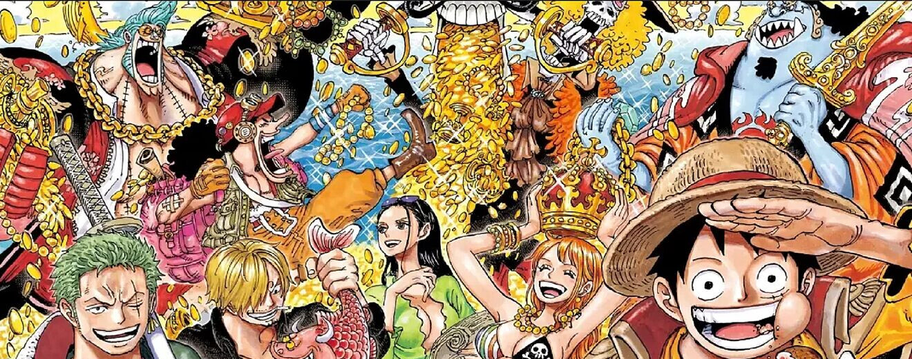
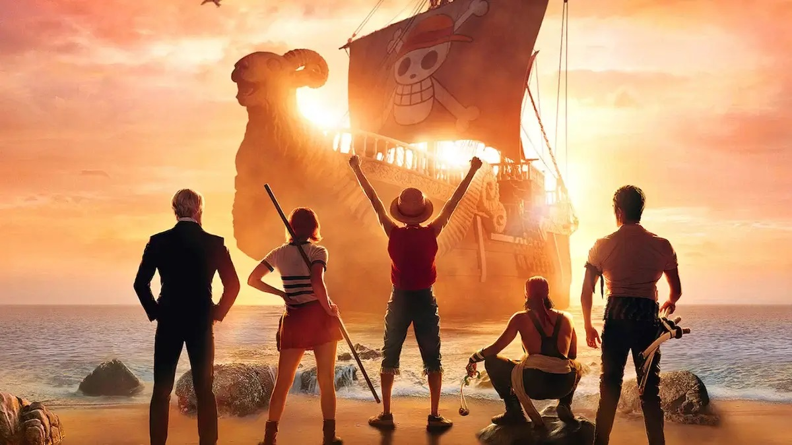

Netflix muestra al elenco del live-action de One Piece en el primer poster de la serie
La historia de Monkey D. Luffy llegará este año al servicio de streaming
One Piece, uno de los animes más populares del mundo, se convertirá en una serie con actores reales gracias a Netflix. Hay muchas dudas sobre la calidad de esta adaptación, pero el gigante del streaming no quiere que eso detenga el hype. Es por esto que decidió que era momento de compartir su primer poster, el cual nos da un pequeño vistazo al elenco.
Fue por medio de redes sociales como Netflix compartió el primer poster de su versión live action de One Piece. En ella podemos ver a Luffy (Iñaki Godoy) junto a Sanji (Taz Skylar), Nami (Emily Rudd), Usopp (Jacob Gibson), y Roronoa Zoro (Mackenyu Arata).
El poster muestra a los Piratas del Sombrero de Paja mirando al Going Merry, el barco que los transporta por todos los mares mientras Luffy lucha por convertirse en el Rey de los Piratas.
Sin más te dejamos el poster:
El primer poster de One Piece
Cabe mencionar que, por el momento, One Piece no tiene fecha de llegada a Netflix; sin embargo, el servicio de streaming lo ve como uno de sus estrenos para 2023. Nos mantendremos al pendiente y te informaremos cuando tengamos noticias sobre el lanzamiento de la serie live action de One Piece.
¿te gusta cómo se ve el poster de One Piece? ¿Crees que esta adaptación live action pueda ser un éxito?